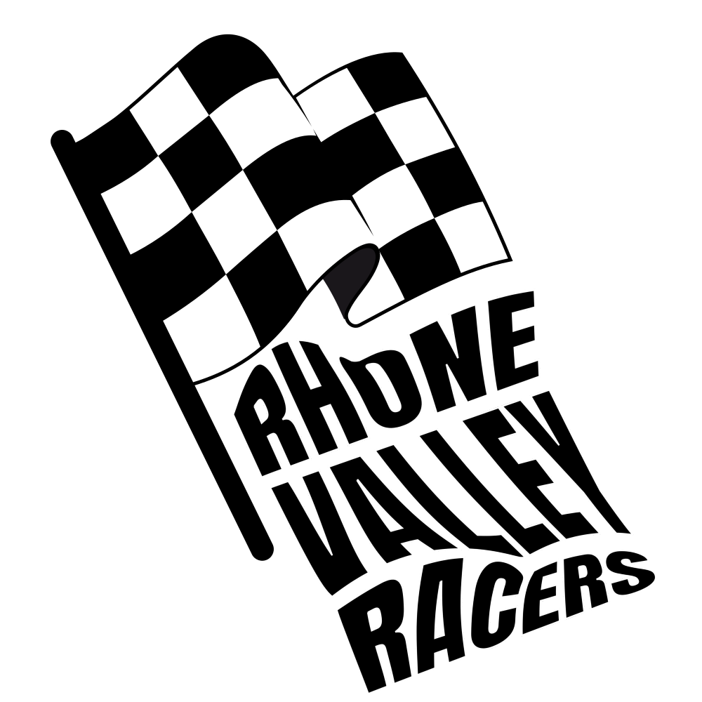

Présenté par Morgann Rachedi & Elia Bravos Germond
Une reconstitution fidèle et interactive d'un secteur stratégique de la vallée du Rhône, incluant :
- Vienne
- Condrieu
- Ampuis
- La-Chappelle-Vilard
- Sainte-Colombe
- Saint-Romain-en-Gal
- Tupin-et-Semons
- Saint-Cyr-sur-le-Rhône
- Massif du Pilat
Réalisme Urbain
Reconstitution précise des axes routiers et des façades emblématiques pour une immersion totale dans l'identité rhodanienne.
Structure éditrice (studio)
Morgann Dev CP
Spécifications Techniques & Optimisations
Moteurs & Workflow
Développement sous Unity avec une modélisation architecturale préalable sous Blender.
Approche Modulaire
Découpage de la zone en 143 dalles de 2 km par 2 km pour garantir une fluidité totale et une gestion optimisée de la mémoire vive (RAM)
Identité Visuelle
Standard de qualité graphique élevé ("Liquid Glass") assurant une interface utilisateur épurée et moderne